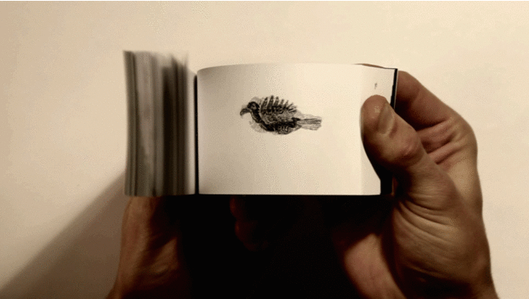

Анимация – процесс оживления изображений на экране. Но каким образом они оживают?
Человеческий мозг построен таким образом, что быстро сменяющееся изображение с незначительными изменениями воспринимается как видеоряд. Достаточно сменять 16 изображений в секунду – это довольно просто сделать блокнотиком, и наверняка в школе все занимались подобным видом развлечения.
На блокнотике нарисована птичка. Листая блокнотик, вы замечаете, что на каждой страничке нарисована одна и та же птичка, но лишь поза её сменяется от страницы к странице. Сжимая блокнотик как на рисунке выше и отпуская большим пальцем страницы блокнотик делает «фыр-р-р», и вы видите анимацию – птичка летит.
Это работает таким же образом и в играх. Каждый раз, в соответствии со сценарием компьютер отображает происходящие события на экране отрисовывая их подобно художнику. Только художнику на картинку понадобится несколько часов, а компьютер рисует 60 изображений за секунду, предоставляя вам анимацию, как это было с блокнотиком.